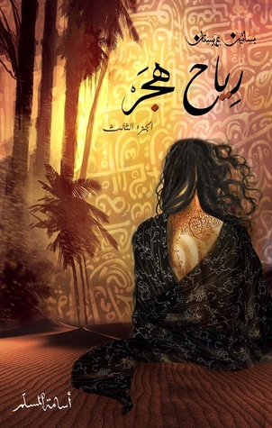

famous novels
Novels are more than just stories on paperthey are windows into different worlds, cultures, and human experiences. Through characters and plots, novels allow us to explore emotions, ideas, and perspectives that go far beyond our daily lives. They help us understand society, history, and even ourselves in ways that pure facts and scientific texts cannot.
Reading should not be limited only to scientific or academic materials. While science develops our knowledge and problem-solving skills, novels enrich our imagination, creativity, and emotional intelligence. A good novel can teach us empathy, broaden our worldview, and inspire us to think critically about life. In todays fast paced world, reading literature is a way to slow down, reflect, and connect with the deeper aspects of being human.
Let talk about some of the famous novels :
1.The (Kingdom of Eloquence) Series
![]()
Concept and Content
- The Kingdom of Eloquence is a series of Islamic fantasy novels written by Dr. Hanan Lashin, an Egyptian writer and veterinarian.
- The series blends fantasy, romance, and Islamic values in a captivating literary style.
- The story revolves around warriors from the Abadol family, where one of them is chosen to enter the mythical land called {The Kingdom of Eloquence} through a falcon named Al-Rumadi (the Grey Falcon).
more details
Books in the Series
- Ekadoly (2017).
- Opal (2018).
- Amanos.
- Kouicol (2020)
- Socotra (2021)
- Sirosh (2024)
- Abadol.
Literary Style
- Each novel carries its own story, characters, and theme, yet they are connected within the same fictional world, highlighting values and ethics.
- The language used is classical Arabic, enriched with elegant expressions and sometimes rare vocabulary, with explanations included to make reading easier.
- The narrative is full of adventure, suspense, and imagination, while also emphasizing positive values, self-identity, and moral lessons.
Public Reception
- Many Arab readers describe the series as unique and inspiring, especially among young adults.
- On literary forums, readers highlight its beautiful language and thrilling fantasy world, noting how it balances entertainment with meaningful messages.
Conclusion
The Kingdom of Eloquence is a remarkable Arabic fantasy series that attracts young readers with its rich world, eloquent language, and moral depth. Each part of the saga offers a unique adventure, while together they form a journey of imagination, values, and self-discovery
ch1
ch2
ch3
ch4
ch5
ch6
ch7
2.White Nights

Concept
White Nights is a romantic, dreamy novella by Fyodor Dostoevsky, exploring themes of loneliness, dreams vs. reality, and unrequited love. It reflects the emotional world of a young, introverted dreamer in 19th-century St. Petersburg.
more details
Content
- The story takes place in St. Petersburg during four white nights nights where the sun barely sets in summer.
- The Narrator: A lonely, dreamy young man who lives more in his imagination than reality.
- He meets Nastenka, a simple, sad girl waiting for her lover who promised to return after a year.
- Over the four nights, they talk and grow emotionally close; the narrator believes love is blossoming between them.
Readers Opinions
- Romantic & Dreamy: Seen as a soft, sad love story full of dreamlike emotions .
- Loneliness & Heartbreak: Emphasis on the protagonists isolation and emotional pain .
- Short & Dramatic: Feels like a condensed, emotional play rather than a long novel .
- Simple Language, Strong Emotion: Dostoevskys style conveys deep feelings clearly .
eng
arb
3.Basateen Arabistan

Concept
Basateen Arabistan is a literary work by Saudi author Osama Al-Muslim, known for blending fantasy and historical fiction.
The story merges ancient Arab legends with imaginative storytelling, creating a unique reading experience for fans of fantasy literature.
The plot takes place in a fantasy world inspired by ancient Arab myths, where stories of magic, heroism, betrayal, and loyalty intertwine.
The narrative follows several characters from different tribes competing for power and influence in a world full of conspiracies and conflicts.
more details
Books in the Series
- Basateen Arabistan.
- The League of Devils.
- Winds of Hijr.
- The Lame One.
- The Hybrid Witch.
- The Lions Den.

Plot
- The novel is divided into multiple parts, each focusing on a specific character or tribe.
- Each part explores the development of events from the perspective of that character or tribe.
- The story is rich in detailed descriptions of battles, war tactics, and interpersonal relationships, creating a complex and immersive world.
Readers Opinions
- The novel received positive reviews, with readers praising the authors ability to build a cohesive and engaging fantasy world.
- The narrative style, character development, and dialogues were especially appreciated.
- Some readers noted that the story can be complex in certain parts, requiring careful attention to understand the intricate details.
Conclusion
Basateen Arabistan is a historical fantasy novel that takes readers on a journey through a world full of legends, conflicts, and intricate characters.
If you enjoy fantasy and historical fiction, this novel is considered worth reading.
ch1
ch2
ch3
ch4
ch5
ch6
4.The Hunchback of Notre-Dame

General Information
- Author: Victor Hugo.
- Publication Date: 1831.
- Genre: Historical novel Romanticism Social critique.
- Setting: Notre-Dame Cathedral in Paris, France (15th century).
more details
Plot
The story takes place in 15th-century Paris, centered around the majestic Notre-Dame Cathedral.
- A deformed bell-ringer lives in the cathedral, isolated from society.
- He crosses paths with a beautiful and free-spirited gypsy girl, whose charm captures the attention of many some with pure feelings, others with darker intentions.
- A powerful church figure and a handsome soldier are both drawn to her, creating a complex web of love, obsession, jealousy, and betrayal.
- The novel explores themes of love, beauty, justice, and the clash between compassion and cruelty, all against the backdrop of medieval Paris and the towering cathedral.
Themes
- The conflict between outer ugliness and inner beauty.
- Criticism of social injustice in medieval France.
- The contrast between true religion (love and compassion) vs. hypocrisy (cruelty and control).
- The value of freedom, justice, and pure love.
Readers
- Deeply moving and emotional.
- Strong message: inner beauty matters more than appearance.
- Vivid historical and architectural descriptions.
- Too much detailed description of architecture and Paris history.
eng
arb
5.Crime and Punishment

General Information
- Author: Fyodor Dostoevsky.
- Publication Date: 1866.
- Genre: Philosophical Psychological Social novel.
- Setting: St. Petersburg, Russia.
- Time: 19th century.
more details
Plot
The story follows a young man living in poverty, torn between desperation and a dangerous philosophical idea about superiority and breaking the law.
He finds himself committing a crucial act that leads to a long journey of guilt, inner torment, and the search for redemption.
Main Themes
- The conflict between good and evil within the human soul.
- Can a crime ever be justified if the goal is "noble"?
- The crushing weight of guilt: how conscience punishes more than the law.
- The role of faith, morality, and love in saving the human spirit.
Public Opinions
- Critics: Considered it one of the greatest psychological and philosophical novels ever written.
- Positive: Deep psychological insight, immerses the reader in the protagonists inner struggle.
- Negative: Very long, with heavy philosophical monologues that some find difficult to follow.
eng
arb
6.Death on the Nile

General Information
- Author: Agatha Christie.
- Publication Year: 1937.
- Genre: Detective / Mystery.
- Detective: Hercule Poirot
more details
Plot
- The story takes place in Egypt, mostly aboard a luxurious cruise ship sailing the Nile River.
- A group of passengers from different backgrounds come together for a sightseeing trip.
- A mysterious murder happens on board.
- The famous detective Hercule Poirot, who happens to be on the same cruise, begins the investigation.
- The novel follows Christies classic style: suspense, red herrings, shocking twists, and an unexpected ending.
Main Themes
- Jealousy, love, and money as motives for crime.
- Appearances can be deceiving the least expected person may turn out to be the killer.
Readers Opinions
- Atmosphere of Egypt: Readers loved Christies vivid descriptions of ancient Egypt and the Nile.
- Shocking ending: The clever and unexpected resolution is often praised.
- Slow start: Some readers felt the beginning was a bit long before the crime occurs.
- Too many characters: At first, some readers found it hard to keep track of everyone.
- On Goodreads, the novel holds an average rating of 4/5 stars with hundreds of thousands of reviews.
eng
arb
7.The (Land of Zikola) Series by Amr Abdel Hamid

General Information
- Author: Amr Abdel Hamid (Egyptian writer).
- Publication: First book published in 2010
- Genre: Fantasy Adventure Social Drama
- The series is composed of three parts.
more details
Books in the Series
- Land of Zikola.
- Amareta.
- The Valley of Forgotten Wolves.


Plot
- The first book introduces Khaled, a young Egyptian man who accidentally enters a mysterious tunnel leading to a parallel world called Zikola.
- In Zikola, people dont trade with money but with units of intelligence.
- The rich are those with high mental capacity, while the poor are those who lack it.
- The story explores Khaleds struggle to survive under harsh laws where mistakes can cost him his own intelligence.
Main Themes
- A critique of systems that value people by material measures.
- The importance of intellect and thought in the face of injustice and discrimination.
- The conflict between justice and class divisions.
Readers Opinions
- Many readers found the idea innovative and unique in Arabic contemporary literature.
- The style is simple and easy, making the books fast-paced and enjoyable.
- Some critics noted the simplicity might feel too light, but it makes the novels a good entry point into fantasy for young readers.
ch1
ch2
ch3
8.The Epic of the Seven Seas

Series Overview
The Epic of the Seven Seas is a fantasy novel series written by the Saudi author Osama Al-Muslim.
It quickly became one of the bestselling Arabic fantasy sagas, widely read across the Gulf and the Arab world.
more details
Books in the Series
- Luj (2017).
- Queen of the Cranes (2017).
- Rebellion of the Mermaids. (2018)
- Battle of the Queens (2019).
- Dawn of the Sirens (2021).
- Empire of the Turtles (currently in progress) .


Summary of the Storyline
- The saga follows Luj, the princess of the Seven Seas, who seeks to reclaim her fathers throne.
- Her journey takes her from the waves above to the deepest oceans, where she faces mythical kingdoms, dark secrets, and endless struggles for power.
- The plot explores the clash of royal dynasties, betrayal, and the survival of her people.
- Throughout the story, readers encounter legendary beings such as mermaids, sirens, sea gods, and mysterious creatures.
- Key characters include Amphitrite the Crane Queen, Kofan the human, and Belshon, each with their own agendas and destinies.
- The saga blends fantastical mythology with human drama, making the reader feel submerged in a vast cinematic world.
Readers
- One of the best fantasy series. Its my favorite among all of the authors works.
- The series belongs to the realm of epic fantasy. It captivates the hearts and minds of readers of all ages.
- This novel truly surprised me, the level of writing is impressive.
ch1
ch2
ch3
ch4
ch5
9.The Metamorphosis by Franz Kafka

General Information
- Title: The Metamorphosis (Die Verwandlung).
- Author: Franz Kafka (1883 to 1924).
- Published: 1915.
- Original Language: German.
- Genre: Novella, Existential Literature, Modernist Fiction.
more details
General Summary
The story centers on Gregor Samsa, a traveling salesman who experiences a sudden, mysterious transformation that changes the course of his life.
The narrative explores his struggles with identity, family relationships, and the harsh realities of human existence.
Rather than focusing only on external events, Kafka highlights the psychological depth, Gregors inner thoughts, and the way his family and society respond to unexpected change.
Reception
- Considered one of the most important works of 20th-century literature.
- Its simple yet haunting style leaves the story open to multiple interpretations.
- Often studied in philosophy, psychology, and literature courses worldwide.
eng
arb
10.Crooked House

General Information
- Title: Crooked House.
- Original Language: English.
- Publication Year: 1949.
- Author: Agatha Christie.
more details
Summary
- The story is set in a peculiar mansion called Crooked House, home to the wealthy and interconnected Leonides family.
- The novel begins with the mysterious death of the family patriarch, Aristide Leonides, creating tension and suspicion among the family members.
- Detective Charles Hayward, who is engaged to Sophia Leonides, takes on the investigation.
Reception
- Crooked House is considered one of Agatha Christies best works, praised for its suspense and intricate plotting.
- The novel has been translated into multiple languages and sold millions of copies worldwide.
- It is a favorite among fans of classic mystery novels.
eng
arb